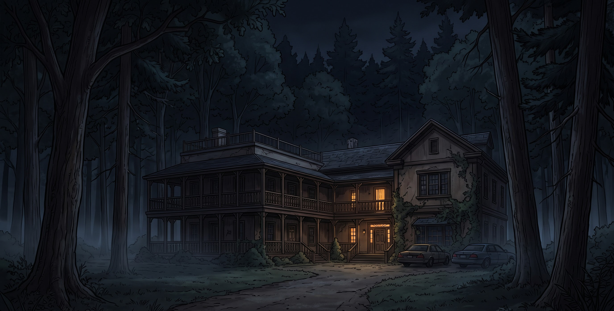
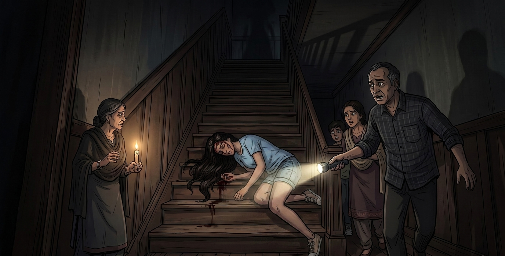
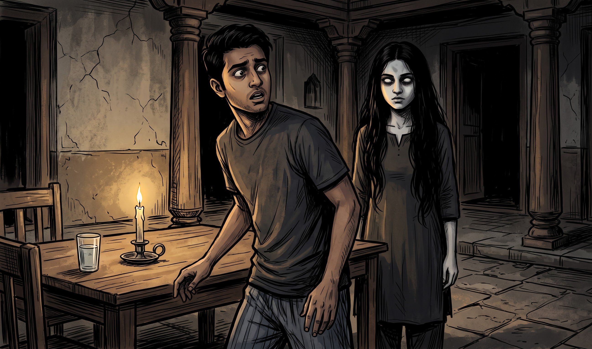
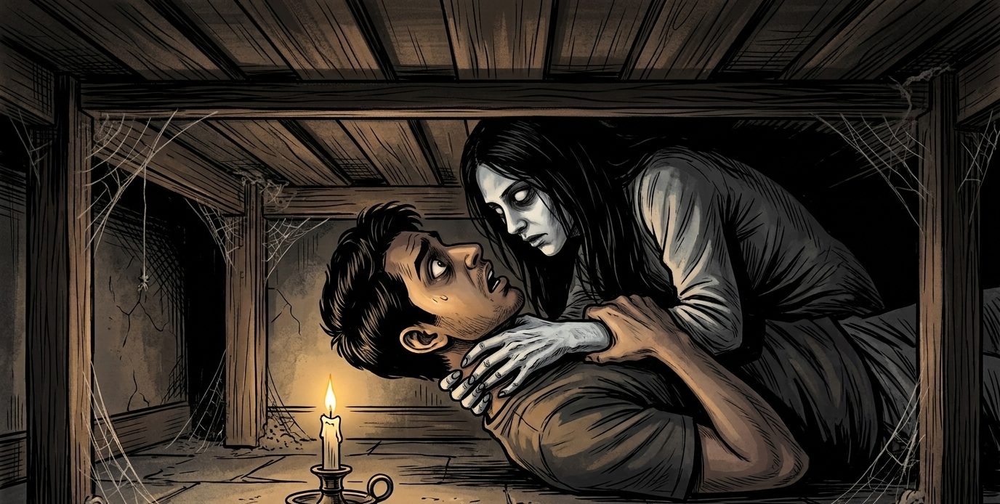
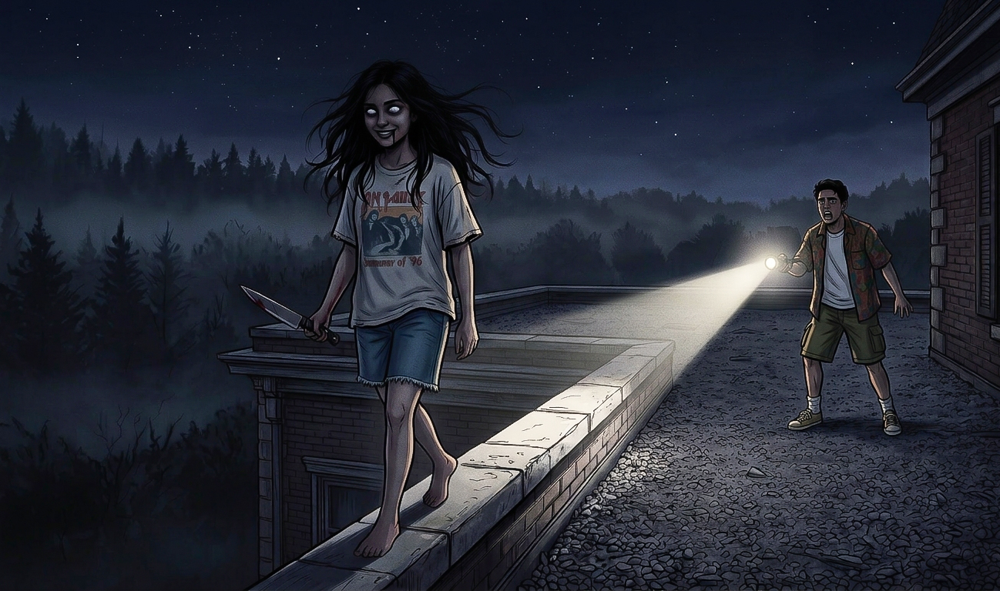

1996 की गर्मियों में, मैसाचुसेट्स के ब्रुकलाइन शहर के बाहरी इलाके में घने जंगलों, सुनसान रास्तों और ऊँचे पेड़ों से घिरा एक पुराना, विशाल मकान था। इस घर में एक भारतीय-अमेरिकी परिवार कई वर्षों से साथ रहता था। घर में बड़ा-सा केंद्रीय आँगन, लंबी गलियाँ, कई कमरे, एक अंदरूनी आँगन और छत तक जाने वाली सीढ़ियाँ थीं। परिवार इतना बड़ा था कि माता-पिता, चाचा-चाची, भाई-बहन और कई रिश्तेदार एक ही घर में रहते थे।

इसी परिवार में बाईस साल की माया रहती थी। वह हँसमुख और बेहद शरारती लड़की थी। उसकी सबसे पसंदीदा शरारत थी अंधा होने का नाटक करना। वह अचानक अपनी आँखों पर हाथ रखकर चिल्लाती, “माँ, मुझे कुछ दिखाई नहीं दे रहा!” शुरुआत में घरवाले घबरा जाते थे, लेकिन एक ही मज़ाक बार-बार सुनने के बाद किसी ने उसे गंभीरता से लेना बंद कर दिया था। खासकर जब घर में कोई अनजान मेहमान आता, तो माया का यह मज़ाक जरूर होता।
फिर अमावस्या की वह रात आई।
गर्मियों की उस रात घर के अंदर उमस बहुत ज्यादा थी। इसलिए रात के खाने के बाद पूरा परिवार घर की सपाट छत पर इकट्ठा हो गया। ठंडी हवा चल रही थी और सभी हाल ही में हुई एक शादी के बारे में बातें करते हुए हँस रहे थे। लगभग आधी रात के करीब परिवार के लोग धीरे-धीरे नीचे जाने लगे। माया अपनी छोटी बहन अनिका के साथ सीढ़ियों से उतर रही थी, तभी उसने हमेशा की तरह अपनी आँखों पर हाथ रख लिया। “अनिका, मुझे कुछ दिखाई नहीं दे रहा। मैं गिरने वाली हूँ!” सबने सोचा कि वह फिर मज़ाक कर रही है। किसी ने हँसते हुए कहा, “तो गिर जाओ!” और सभी नीचे चले गए।
कुछ ही क्षण बाद एक भयानक आवाज़ आई।

माया सच में सीढ़ियों से गिर चुकी थी। उसके सिर पर गंभीर चोट लगी थी और चेहरे पर खून बह रहा था। उसके हाथ और पैर पर भी चोट आई थी। परिवार उसे तुरंत कार से डॉक्टर के पास ले गया। इलाज के बाद भी माया पूरी रात बेहोश रही।
अगली सुबह जब उसे होश आया, तो सबने पूछा कि आखिर हुआ क्या था। माया ने बस इतना कहा, “मुझे नहीं पता। मुझे कुछ दिखाई नहीं दे रहा था। मैं कुछ देख नहीं पा रही थी और फिर गिर गई।” उसने यह नहीं बताया कि वह पहले भी यही मज़ाक कर रही थी। इसके बाद माया अचानक बहुत शांत हो गई। जो लड़की हमेशा हँसती और शरारत करती थी, वह घंटों चुपचाप बैठी रहती। परिवार ने सोचा कि हादसे के बाद वह सदमे में है और इस बात से दुखी है कि किसी ने उस पर विश्वास नहीं किया।
बिना पुतलियों वाली छाया
उस रात ब्रुकलाइन के बाहरी इलाके में तेज बारिश होने लगी। परिवार ने छत और आँगन के बजाय घर के अंदर सोने का फैसला किया। आधी रात के बाद अचानक बिजली चली गई। पूरा घर अंधेरे में डूब गया। कुछ लोगों ने मोमबत्तियाँ जलाईं और अर्जुन ने पुराने बैटरी वाले फ्लैशलाइट ढूँढकर निकाल लिए। लगभग सुबह चार बजे माया का भाई रोहन प्यास लगने पर अंदरूनी आँगन में पानी लेने गया।
जैसे ही उसने गिलास रखा, उसे अचानक महसूस हुआ कि उसके पीछे कोई खड़ा है।
उसे अपनी गर्दन पर किसी की साँस महसूस हुई।
रोहन ने धीरे-धीरे पीछे मुड़कर देखा।
वहाँ माया खड़ी थी।

उसके खुले बाल चेहरे पर बिखरे हुए थे। उसकी आँखें पूरी तरह सफेद थीं। उनमें पुतलियाँ बिल्कुल नहीं थीं। वह बिल्कुल स्थिर खड़ी थी, जैसे उसे दिखाई ही न देता हो और वह केवल आवाज़ और गंध से रोहन की मौजूदगी महसूस कर रही हो।
रोहन डर से जम गया। फिर उसने भागने की कोशिश की।
माया ने पीछे से उसे पकड़ लिया और दोनों हाथों से उसकी गर्दन जकड़ ली। दोनों जमीन पर गिर पड़े। उनकी आवाज़ सुनकर पूरा परिवार जाग गया। जब सब मोमबत्तियों और फ्लैशलाइट लेकर आँगन में पहुँचे, तो रोहन बेहोश पड़ा था और माया उसके पास खड़ी थी।
अगली सुबह रोहन को होश आया, लेकिन उसके शरीर का ऊपरी हिस्सा लगभग लकवाग्रस्त हो चुका था। वह मुश्किल से बोल पा रहा था। उसके चेहरे पर ऐसा डर था, जैसे उसने कुछ ऐसा देखा हो जिसकी कल्पना भी नहीं की जा सकती थी। लेकिन वह किसी को कुछ बता नहीं पा रहा था।
माया सिर्फ एक ही बात दोहराती रही: “मुझे दिखाई नहीं दे रहा था।”
बिस्तर के नीचे से आवाज़
परिवार ने पूजा की, मंदिर गए और सोचने लगे कि शायद किसी ने माया पर बुरी नजर या कोई काला साया डाल दिया है। उन्हें लगा कि माया खुद किसी अलौकिक शक्ति की शिकार है। किसी को यह शक नहीं था कि शायद इस डरावनी घटना का कारण वही थी।
अगली रात लगभग तीन बजे माया के बड़े भाई अर्जुन को अपने पैर पर कुछ गुदगुदी महसूस हुई। उसने पैर खींच लिया और सोचा कि शायद रोहन मज़ाक कर रहा है। कुछ मिनट बाद वही एहसास फिर हुआ। “रोहन, बंद करो,” अर्जुन ने धीरे से कहा। लेकिन तभी उसे याद आया कि रोहन तो ठीक से हिल भी नहीं सकता था।
उसने बिस्तर की ओर देखा। रोहन वहाँ नहीं था। माया भी गायब थी।
परिवार ने पूरा घर, आँगन, गलियाँ, छत और आसपास का जंगल छान मारा। मुख्य दरवाजा अंदर से बंद था और किसी ने उसे खुलते हुए नहीं सुना था। किसी के पास मोबाइल फोन नहीं था। अर्जुन ने घर के लैंडलाइन फोन से पड़ोसियों को फोन करने की कोशिश की, लेकिन उससे पहले ही परिवार को घर के अंदर से एक आवाज़ सुनाई दी।
ठक... ठक... ठक...
आवाज़ एक बिस्तर के नीचे से आ रही थी।

किसी की हिम्मत नहीं हो रही थी कि नीचे झाँके। आखिरकार माया की माँ और अर्जुन नीचे झुके। माया वहाँ पड़ी थी। उसके पास रोहन भी था। उसका शरीर बुरी तरह काँप रहा था, आँखें ऊपर की ओर पलटी हुई थीं और गले पर गहरे खरोंच के निशान थे। माया के हाथ उसकी गर्दन के पास थे। परिवार ने दोनों को बाहर खींच लिया, डरते हुए कि कहीं रोहन की जान न चली जाए।
लगभग एक घंटे बाद माया को होश आया। उसने फिर वही कहा, “मुझे दिखाई नहीं दे रहा था। मुझे नहीं पता मैं यहाँ कैसे पहुँची।” रोहन की हालत बेहद खराब थी। परिवार ने तय किया कि सुबह होते ही दोनों को बड़े अस्पताल ले जाएगा। लेकिन सूरज निकलने से पहले ही माया फिर गायब हो गई।
अंधेरा और खूनी शिकार
सुबह लगभग साढ़े पाँच बजे उसकी माँ की नींद खुली। माया उस खाट पर नहीं थी जहाँ वह सो रही थी। सभी उसे खोजने लगे। अर्जुन ने हाथ में फ्लैशलाइट ली और गलियारे से होते हुए छत की ओर भागा।
माया छत की मुंडेर के बेहद संकरे किनारे पर चल रही थी। उसके बाल पूरी तरह खुले थे। उसकी आँखें सफेद थीं। और उसके हाथ में घर का सबसे बड़ा रसोई का चाकू था। वह धीरे-धीरे गुनगुना रही थी और ऐसे चल रही थी जैसे उसे सब कुछ साफ दिखाई दे रहा हो।

अर्जुन चिल्लाया, “माया! तुम क्या कर रही हो? नीचे आओ!” माया उसकी आवाज़ की तरफ मुड़ी। पहली बार अर्जुन ने उसका चेहरा साफ देखा। उसकी आँखों में पुतलियाँ नहीं थीं। बाल चेहरे पर बिखरे थे और होंठों पर एक अजीब मुस्कान थी। उसके मुँह के आसपास खून लगा था।
फिर उसने छलांग लगा दी।
अर्जुन ने उसे जमीन पर गिरने से पहले पकड़ लिया। चाकू से उसके हाथ पर कट लग गया, लेकिन उसने माया को नहीं छोड़ा। माया पूरी ताकत से उससे छूटने और उसे चाकू मारने की कोशिश कर रही थी। तभी कुछ ऐसा हुआ जिसे देखकर अर्जुन की साँस रुक गई। माया का सिर धीरे-धीरे लगभग 180 डिग्री घूम गया, जबकि उसका शरीर उसी दिशा में था।
माया मुस्कुराई। उसकी आँखें पूरी तरह सफेद थीं।
अर्जुन ने उसे धक्का दिया और भागने लगा। माया तुरंत चाकू लेकर उसके पीछे दौड़ी। अर्जुन एक दूसरे गलियारे में मुड़ा, लेकिन माया उसकी कदमों की आवाज़ सुनकर उसके पीछे आ गई और सीधे दीवार से जा टकराई। वह तुरंत उठी और हाथों से आसपास टटोलने लगी। अर्जुन समझ गया—माया सच में अंधी थी। वह आवाज़ का पीछा कर रही थी।
उसने सबको चुप रहने की चेतावनी दी। परिवार अलग-अलग कमरों और आँगन में छिप गया। माया धीरे-धीरे अंधेरे में चलती रही, उनकी आवाज़ें सुनने की कोशिश करती रही। आखिरकार अर्जुन और उसके दो चचेरे भाइयों ने पीछे से उसे पकड़ लिया। लेकिन माया की ताकत इंसानी नहीं थी। तीन जवान पुरुष भी उसे काबू में नहीं कर पा रहे थे। संघर्ष के दौरान उसने उनमें से एक को चाकू मार दिया। फर्श पर खून फैल गया।
माया अचानक रुक गई। वह नीचे झुकी और खून को चाटने लगी।
परिवार एक कमरे में भागा और दरवाजा बंद कर लिया। दरवाजे के नीचे की छोटी-सी जगह से अर्जुन ने देखा कि माया फर्श पर रेंग रही थी और टाइलों पर गिरे खून की एक-एक बूंद चाट रही थी, जैसे वह उसके लिए कोई कीमती चीज़ हो।
आखिरकार परिवार ने उसे काबू कर लिया, चाकू छीन लिया और मोटी रस्सियों से उसके हाथ-पैर बाँध दिए। माया को एक अलग कमरे में बंद कर दिया गया। पहली बार सभी को लगा कि अब यह डरावना सिलसिला खत्म हो गया है।
लेकिन तभी माया चीखने लगी। दरवाजे के पीछे से आने वाली आवाज़ अब माया की नहीं थी। वह एक जवान औरत की आवाज़ थी। और कमरे के अंदर जो कुछ था, वह अब अंधे होने का नाटक नहीं कर रहा था। वह इंतजार कर रहा था।
← Back to Hindi Tales